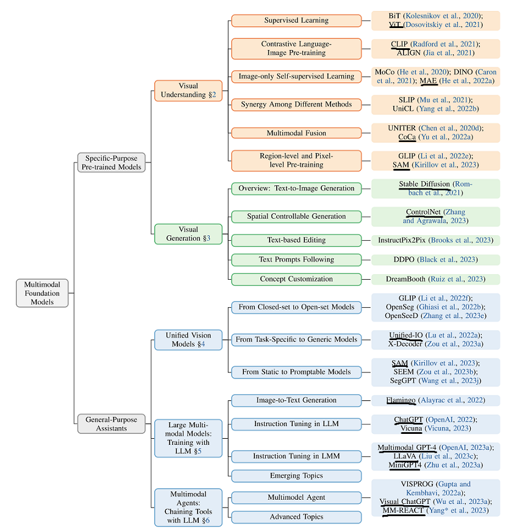
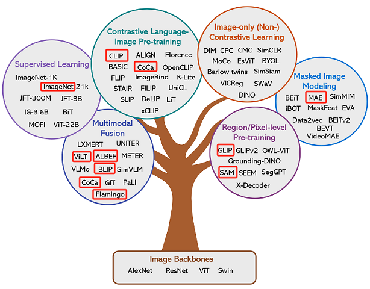
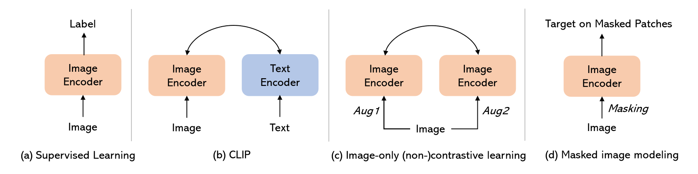
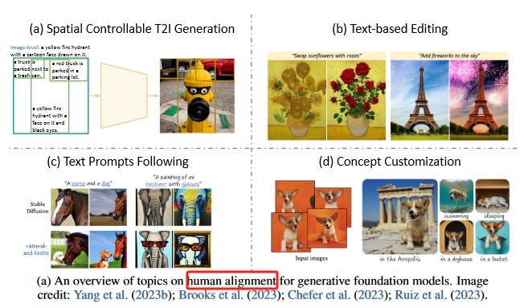
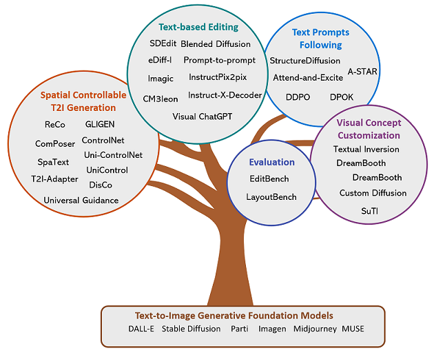

目录 #
论文 #
-
论文地址 《Multimodal Foundation Models:From Specialists to General-Purpose Assistants》 .Sep 2023 - microsoft
overview [0] #
{% asset_img ’’ %}

视觉理解 [1] #
{% asset_img ’’ %}

{% asset_img ’’ %}

视觉生成 [1] #
Human Alignments in Visual Generation [10] #
四种alignment的方式
spatial controllable T2I generation #
-
结合位置分布的文字描述（比较麻烦的用户交互，不仅需要文字，而且需要位置），常用于对位置要求比较高的创意设计（海报等）
-
直接讲原来clip那种image-level的text description升级为基于区域的text description
- reco
- gligen
-
将box描述变为spatial condition
- controlnet
-
无需fintinue，直接变为inference-guide
- universal guidance for diffusion model
-
text-based editing #
-
给一张图和对应的修改文字，输出要求的图，常用于ps等产品
-
diffusion process manipulations
- promot2promot
-
text instruction editing
- InstructPix2Pix
-
Editing with external pre-trained models
-
text promots following #
- 直接给文字描述，生成对应的图，这个是目前常见文生图产品的交互方式，常用于c端或者b端用户图像内容生成。但其对更细节的控制存在一定的难度
- Inference-time manipulation
- StructureDiffusion
- Attend-and-Excite
- Model tuning to follow text prompt
- ddpo
concept customization #
-
给一张图，提取图片中的关键内容，做各种风格（背景/动作）变换，更用于不那么精细的广义产品，比2的运用范围更加广义
-
Concept Customization
- Textual Inversion
- [DreamBooth]
-
Multi-concept customization
- Custom Diffusion
-
Customization without test-time finetuning
- SuTI
-
{% asset_img ’’ %}

{% asset_img ’’ %}

Text-to-Image Generation 技术流派（4类） #
- Generative adversarial networks (GAN)
- Variational autoencoder (VAE)
- Discrete image token prediction
- Diffusion model
统一的视觉模型[2] #
端到端的方式训练LLM[2] #
多模态 Agent[3] #
参考 #
翻译 #
《Multimodal Foundation Models:From Specialists to General-Purpose Assistants》
-
AGI之MFM：《Multimodal Foundation Models: From Specialists to General-Purpose Assistants多模态基础模型：从专家到通用助 翻译
解读 #
1xx. Multimodal Foundation Models: From Specialists to General-Purpose Assistants
1xx. 对应第二章节 《Alignments in Text-to-Image Generation》 [CVPR2023 Tutorial Talk] Alignments in Text-to-Image Generation V
1xx. 对应第三章节 《From Specialist to Generalist: Towards General Vision Understanding Interface》 [CVPR Tutorial Talk] Towards General Vision Understanding Interface